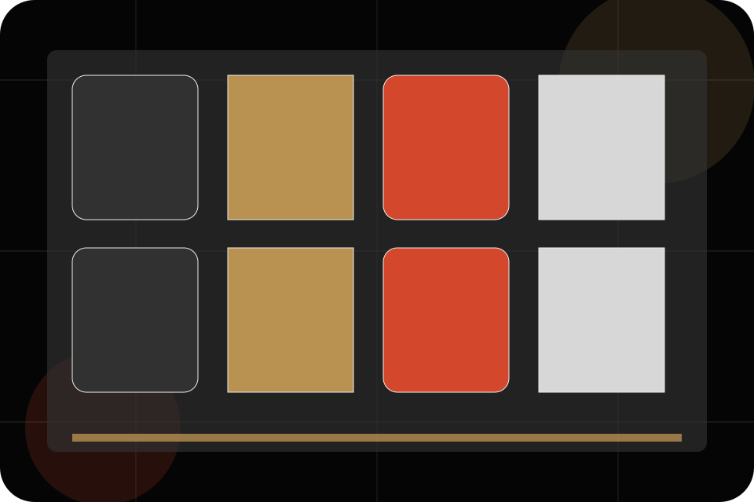
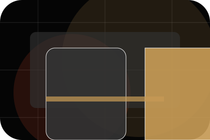
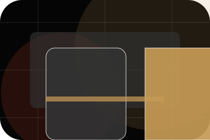
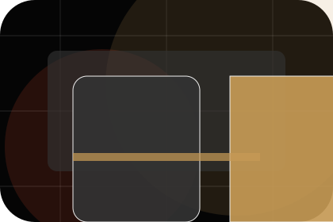
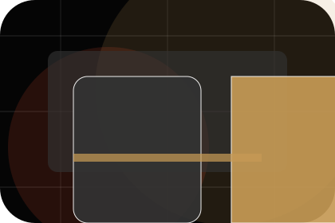
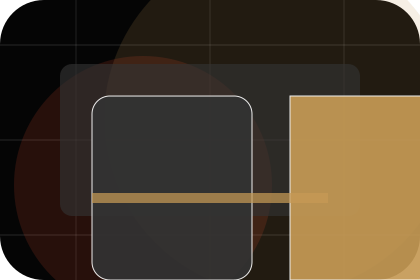
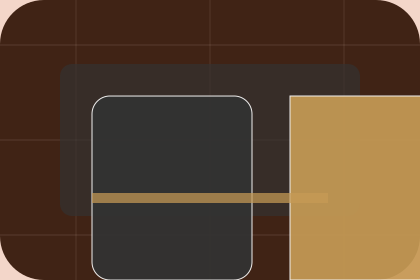

Private / 01
Private by Stage
Private shaped for entertainment, music & performance decisions.
Private opens as a clear entertainment decision hub: what Stage offers, who it helps, why it matters, and which route to take first.
The first screen combines positioning, proof, primary action, and fast internal navigation, so people can act immediately or compare the rest of the private route with context.
Exposure reviewControl planResponse route
Dark poster hero
Choose ticket fit
Select the closest route and Stage keeps the next step, proof, and follow-up expectation aligned with excitement and access.

Private / 02
Events
Events adds dark context to the private route, using the indie film poster system structure to support excitement and access before visitors choose a next step.
Stage uses poster event cards and focused copy to make the decision easier to scan, aligning the section with excitement and access rather than filling space.
Explore PrivateEvents gives the page a specific angle instead of repeating the navigation label.
The poster event cards show what to compare, what to avoid, and what matters most for entertainment, music & performance visitors.
The final cue points to a useful internal route so the section keeps the journey moving.
Private / 03
Hire
Hire adds dark context to the private route, using the indie film poster system structure to support excitement and access before visitors choose a next step.
Stage uses poster event cards and focused copy to make the decision easier to scan, aligning the section with excitement and access rather than filling space.
Explore PrivateContext
Hire gives the page a specific angle instead of repeating the navigation label.
Judgment
The poster event cards show what to compare, what to avoid, and what matters most for entertainment, music & performance visitors.
Direction
The final cue points to a useful internal route so the section keeps the journey moving.
Private / 04
Capacity
Capacity adds dark context to the private route, using the indie film poster system structure to support excitement and access before visitors choose a next step.
Stage uses poster event cards and focused copy to make the decision easier to scan, aligning the section with excitement and access rather than filling space.
Explore PrivateContext
Capacity gives the page a specific angle instead of repeating the navigation label.
Judgment
The poster event cards show what to compare, what to avoid, and what matters most for entertainment, music & performance visitors.
Direction
The final cue points to a useful internal route so the section keeps the journey moving.
Private / 05
Packages
Packages makes commercial comparison easier by showing fit, scope, and terms before entertainment visitors ask for the next step.
The layout keeps price-sensitive decisions honest: it separates starting scope, fuller delivery, and ongoing support so the visitor can ask a sharper question.
View Pricing
Fit
Who the offer is for, which scope it suits, and when a different route may be better.

Scope
What is included clearly enough for entertainment, music & performance visitors to compare value without hidden jargon.

Terms
The practical details that should be confirmed before someone asks to view tickets.
Assess
Who the offer is for, which scope it suits, and when a different route may be better.
ScopedDefend
What is included clearly enough for entertainment, music & performance visitors to compare value without hidden jargon.
QuotedRetain
The practical details that should be confirmed before someone asks to view tickets.
RetainerPrivate / 06
Production
Production explains the practical scope, best-fit situations, and expected outcome so entertainment visitors can compare options without decoding jargon.
The section keeps the offer concrete: what is included, who it is best for, what decision it supports, and which linked route gives the deeper detail.
Explore PrivateBest Fit
Who should use production and when it belongs in the private journey.
What Changes
The practical benefit visitors should expect after choosing this route.

Deeper Route
Where to compare details, pricing, support, or contact options before committing.
Private / 07
Catering
Catering adds dark context to the private route, using the indie film poster system structure to support excitement and access before visitors choose a next step.
Stage uses poster event cards and focused copy to make the decision easier to scan, aligning the section with excitement and access rather than filling space.
Explore PrivateContext
Catering gives the page a specific angle instead of repeating the navigation label.
Judgment
The poster event cards show what to compare, what to avoid, and what matters most for entertainment, music & performance visitors.

Direction
The final cue points to a useful internal route so the section keeps the journey moving.
Private / 08
Proof
Proof shows what changes after the work: clearer decisions, visible progress, and proof points that connect the offer to real outcomes.
The layout connects before-and-after thinking with measured outcomes, making the result easy to scan without promising what the business cannot guarantee.
Explore PrivateThe uncertainty, delay, or missed opportunity visitors bring into proof.
The clearer, safer, or more valuable state Stage is designed to support.
The visible cue that connects proof to a believable decision, not a loose claim.
Private / 09
Enquire
Enquire adds dark context to the private route, using the indie film poster system structure to support excitement and access before visitors choose a next step.
Stage uses poster event cards and focused copy to make the decision easier to scan, aligning the section with excitement and access rather than filling space.
View TicketsContext
Enquire gives the page a specific angle instead of repeating the navigation label.
Judgment
The poster event cards show what to compare, what to avoid, and what matters most for entertainment, music & performance visitors.
Direction
The final cue points to a useful internal route so the section keeps the journey moving.
Private / 10
View Tickets
Stage closes the private route with a clear action, a quick reminder of the value, and a low-friction way to view tickets.
Visitors who are ready can use the primary action. Visitors who are still comparing can scan the section links, proof, and support routes before they view tickets.
View TicketsThe final block keeps the choice simple: act now, compare one more proof route, or send enough detail for a focused response.
View Ticketsexcitement and access
View Tickets
An entertainment site with film-poster rhythm, dark editorial cards, ticket routes, and venue proof. Private ends with a direct path to view tickets, plus enough context for visitors who still need to compare.

View Tickets